Six months after revealing his identity, Tony faces new challenges: the US government demands the Iron Man suit, Ivan Vanko (Whiplash) seeks revenge for his father, and the palladium core of the Arc Reactor is slowly poisoning Tony. With help from Nick Fury and his father's hidden research, Tony synthesizes a new element, debuts the Mark V suitcase armor, and teams up with War Machine to defeat Vanko.

Mark IV Stage Landing at Expo
Tony makes a spectacular high-altitude entrance at the Stark Expo in the new Mark IV armor, landing on stage to open the year-long technology celebration.
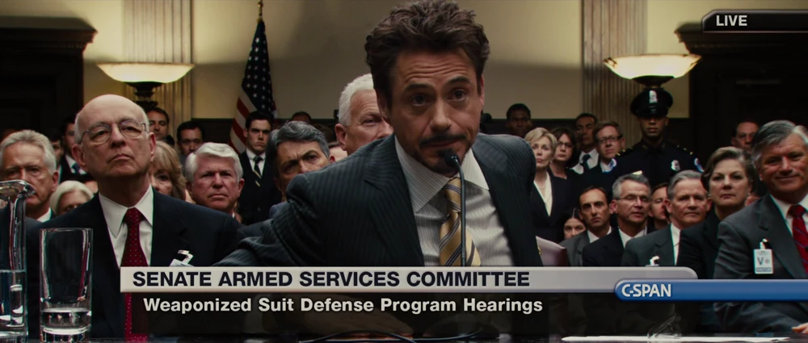
Senate Armed Services Hearing
Tony appears before the Senate committee led by Senator Stern, who demands he hand over the Iron Man suit. Tony defiantly refuses, arguing the suit is an extension of himself.
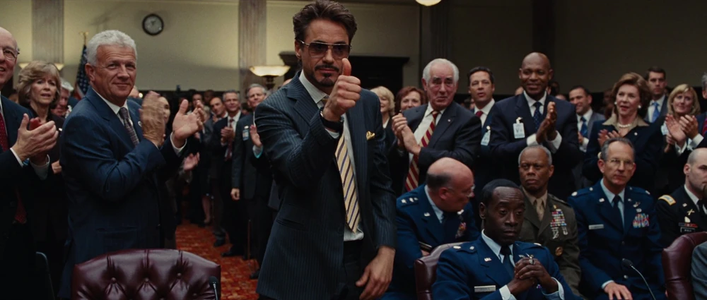
Thumbs Up at the Hearing
Tony gives his trademark thumbs-up during the Senate hearing after hijacking their screens to expose their competitors' failed attempts at replicating the technology.
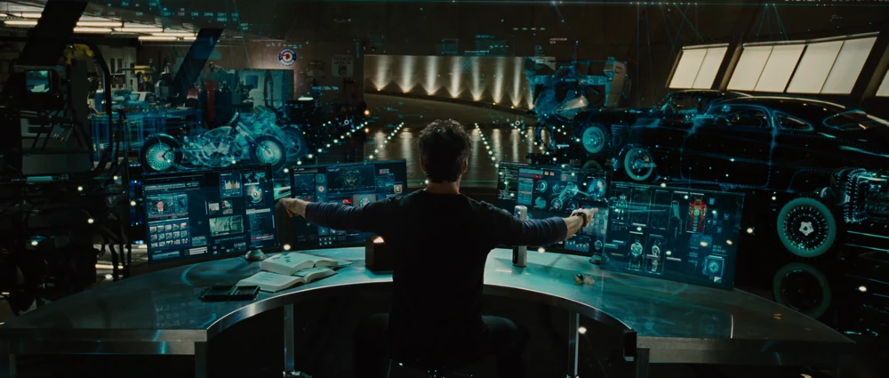
Scanning Palladium Toxicity
In his workshop, Tony's desk scanner analyzes his blood toxicity. The palladium core in his Arc Reactor is poisoning him, and he is running out of safe elements.
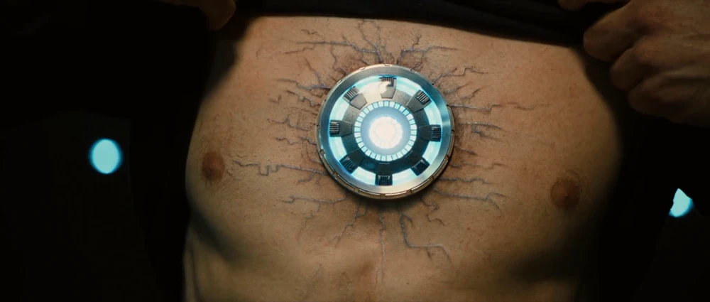
Checking Blood Toxicity
A close-up view of Tony's blood palladium toxicity levels showing a dangerous rise. Tony is forced to accept his mortality while keeping it a secret from Pepper.
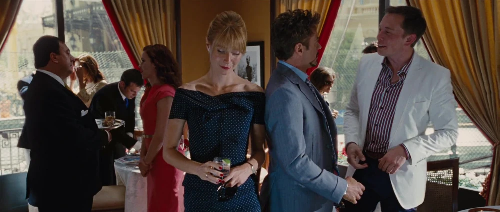
Elon Musk Cameo in Monaco
At the Monaco Grand Prix party, Tony meets with tech billionaire Elon Musk, discussing Merlin engines and electric jets in a brief meta crossover.
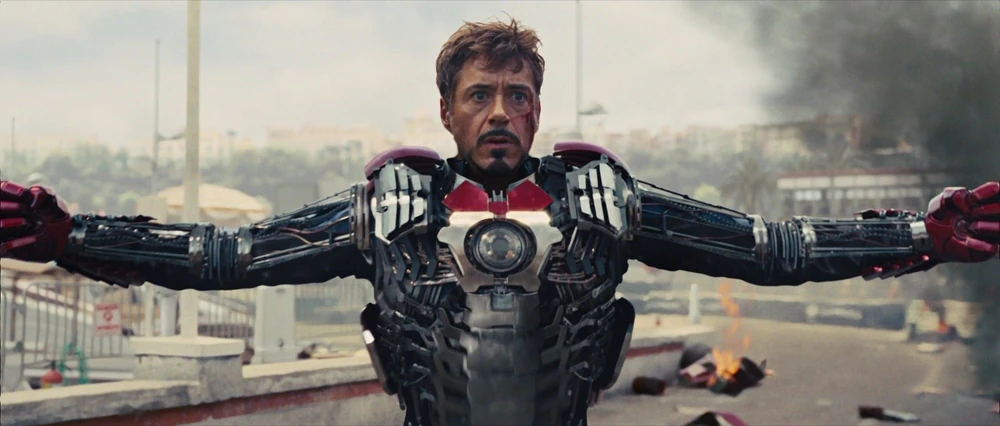
Deploying Mark V Suitcase Armor
When Vanko attacks the racetrack, Happy and Pepper rush the Mark V suitcase to Tony. He steps onto it and the armor unfolds around him in an iconic suit-up sequence.
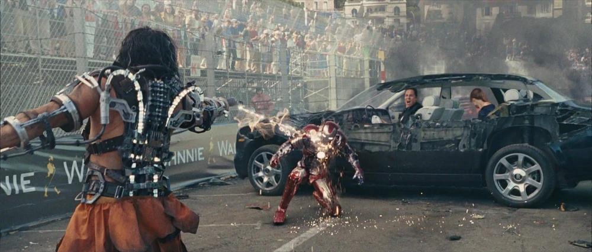
Whiplash Grand Prix Attack
Ivan Vanko (Whiplash) ambushes Tony Stark on the racetrack, using electrified energy whips to slice through Tony's race car and test Stark's defenses.

Birthday Party Brawl
Believing it's his last birthday, a reckless, drunken Tony hosts a party in the Mark IV suit. A concerned Rhodey suits up in the Mark II to confront him, sparking a brawl.

Mansion Brawl Continues
The fight between Tony and Rhodey tears through the Malibu mansion. The clash of the two armored friends represents the lowest point in Tony's spiral.

Repulsor Beam Collision
The brawl concludes when Tony and Rhodey fire repulsor blasts at each other, causing a massive explosion. Rhodey departs with the Mark II armor, taking it to the military.
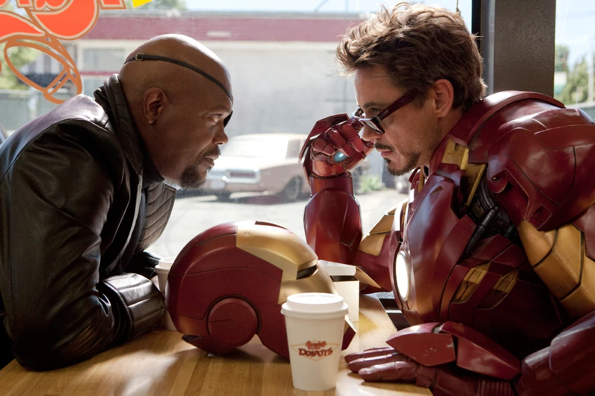
Nick Fury at Randy's Donuts
Nick Fury finds a hungover Tony sitting inside the giant Randy's Donuts sign. S.H.I.E.L.D. places Tony under house arrest to force him to solve his palladium poisoning.
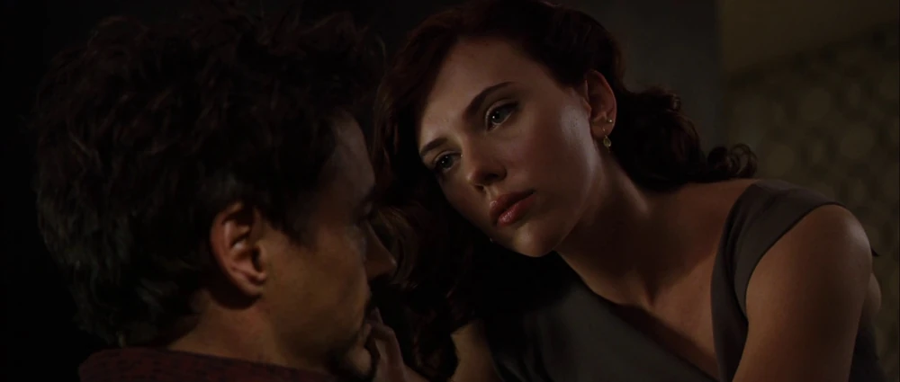
Black Widow Introduction
Tony learns that his new assistant Natalie Rushman is actually Natasha Romanoff (Black Widow), an undercover S.H.I.E.L.D. agent sent to keep tabs on him.

Building the Particle Accelerator
Using clues hidden in the layout of the Stark Expo model left by his father Howard, Tony tears up his workshop floor to construct a makeshift particle accelerator.

Synthesizing the New Element
Tony directs the laser beam of the particle accelerator to hit the chamber, successfully synthesizing a new, non-toxic element to replace the palladium core.
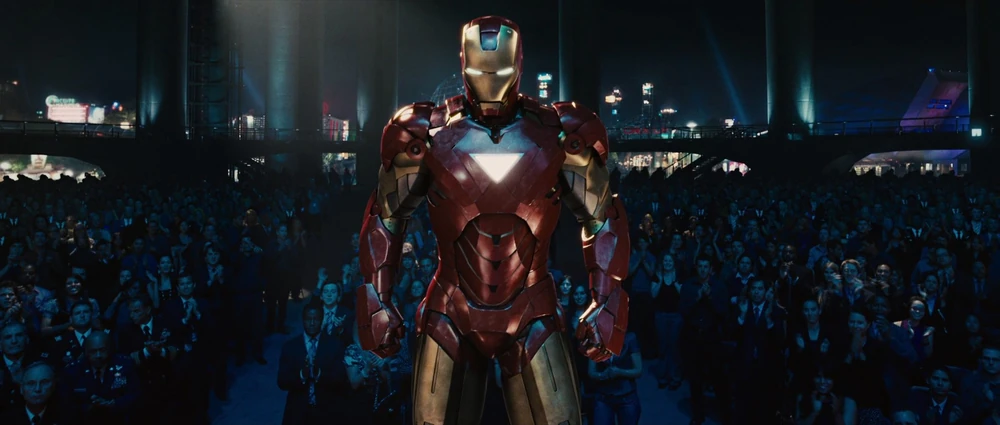
Arriving in Mark VI at Stark Expo
Cured and powered by his newly synthesized triangular Arc Reactor, Tony arrives in the Mark VI armor at the Expo to protect the audience from Hammer's weapon launch.
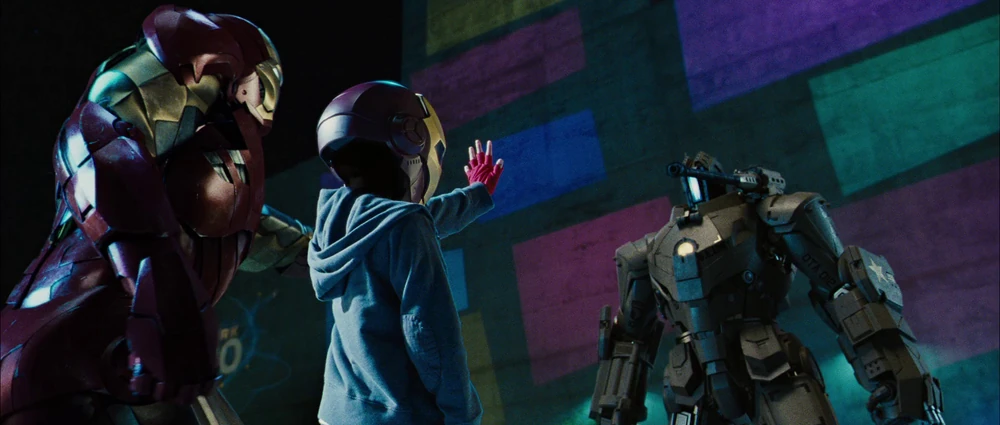
Saving Kid in Iron Man Mask
When Hammer's drones go rogue, a young boy (retroactively confirmed as Peter Parker) stands his ground against a drone. Tony flys in and blasts it: "Nice work, kid."
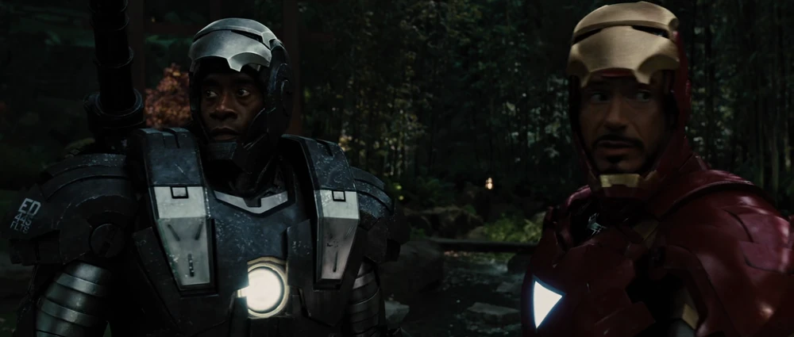
War Machine Deploys
Rhodey, in his heavily armed War Machine suit, arrives at the Expo. Although his suit is temporarily hijacked by Vanko, S.H.I.E.L.D. overrides the system to free him.

Fighting Drones Back-to-Back
Iron Man and War Machine stand back-to-back in the Japanese garden, combining their arsenal of repulsors, lasers, and gatling guns to defeat waves of Hammer Drones.

Avengers Consultant Discussion
Fury meets with Tony to review Romanoff's psychological profile of him. While deemed unfit for the team, Tony is offered a role as a S.H.I.E.L.D. consultant.
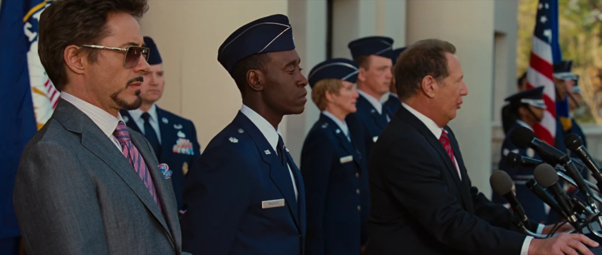
Rhodey & Tony Medal Ceremony
Tony and Rhodey are honored at a military ceremony. Senator Stern is begrudgingly forced to pin medals on the two heroes who saved the Stark Expo.